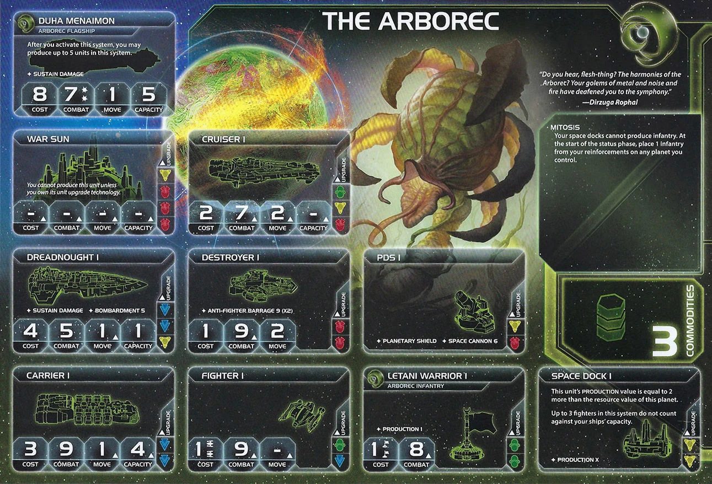

Arborec is one of the most satisfying factions to master in TI4. This faction rewards patience and strategic thinking with an unstoppable late-game presence that can overwhelm the entire board. Arborec isn’t about explosive early plays—it’s about methodical expansion and leveraging a unique production economy to dominate by mid-to-late game.
Watch opponents realize too late that you’ve quietly grown an empire of infantry across the board, each capable of producing units. The slow burn becomes an unstoppable wildfire.
Playing Arborec is like tending a garden. Plant seeds (infantry) everywhere, water them (produce with Letani Warrior PRODUCTION), and harvest a board state where you control more planets than anyone thought possible.
The key misconception about Arborec is that they’re weak early game. Wrong—they’re investing. Every infantry placed is a future production facility. Every planet taken is another node in an ever-expanding production network.
Opponents will underestimate you until suddenly they realize you have 30+ infantry spread across 8 systems, each one capable of producing units. By then, you’ve already achieved board dominance. That moment of realization? Pure fun.
Home System:
Commodities: 3
Notes: Single-planet home system with decent resources (3) but low influence (2). The 3 resources are solid for early production, but you’ll need to expand quickly to gain more economic power.
Notes: You can use your Agent (Letani Ospha) to upgrade your cruiser into either a 2nd carrier (for more capacity) or a dreadnought (for combat power), depending on your needs. Combined with your breakthrough (Psychospore) for an additional movement, this lets you easily reach and capture 3 systems on your first round with proper ship distribution.
Mitosis (Faction Ability): Your space docks cannot produce infantry. At the start of the status phase, place 1 infantry from your reinforcements on any planet you control.
Strategic Note: Use Mitosis almost exclusively for converting to mechs via your mech’s DEPLOY ability (see H. Mech section). Instead of placing a free infantry, replace it with a mech from reinforcements. This gives you free mechs (worth 2 resources each) every status phase without spending resources. Only place regular infantry when you don’t have mechs available in reinforcements or need emergency PRODUCTION coverage.
Letani Warrior I (Infantry): Cost: 1 (x2) | Combat: 8 | PRODUCTION 1
This is your secret weapon. Every infantry has PRODUCTION 1, making them mobile production facilities. Let that sink in.
Starting Technology:
Magen Defense Grid Ω (RR): When any player activates a system that contains 1 or more of your structures, place 1 infantry from your reinforcements with each of those structures. At the start of ground combat on a planet that contains 1 or more of your structures, produce 1 hit and assign it to 1 of your opponent’s ground forces.
Faction Technologies:
Letani Warrior II (GG): Cost: 1 (x2) | Combat: 7 | PRODUCTION 2
After this unit is destroyed, roll 1 die. If the result is 6 or greater, place the unit on this card. At the start of your next turn, place each unit that is on this card on a planet you control in your home system.
Bioplasmosis (GG): At the end of the status phase, you may remove any number of infantry from planets you control and place them on 1 or more planets you control in the same or adjacent systems.
Agent - Letani Ospha: ACTION: Exhaust this card and choose a player’s non-fighter ship; that player may replace that ship with one from their reinforcements that costs up to 2 more than the replaced ship.
Useful for helping players upgrade their ships or as a trade incentive. Can be used to help someone get a critical unit upgrade mid-game.
Commander - Dirzuga Rophal: Unlock: Have 12 ground forces on planets you control. After another player activates a system that contains 1 or more of your units that have PRODUCTION, you may produce 1 unit in that system.
This commander functions primarily as a deterrent. Once unlocked, opponents become hesitant to activate systems containing your infantry (which have PRODUCTION), as you can immediately produce a unit there. This discourages aggression and helps protect your spread-out forces. You should be aiming to unlock this R2-R3.
Hero - Letani Miasmiala: Unlock: Have 3 scored objectives. Ultrasonic Emitter: Overgrowth - ACTION: Produce any number of units in any number of systems that contain 1 or more of your ground forces. Then, purge this card.
Massive swing turn potential. Save this for a crucial moment—usually right before scoring a Stage II or making a final push for victory. Don’t waste it early.
After another player moves ships into a system that contains 1 or more of your units: You may place 1 command token from that player’s reinforcements in any non-home system. Then, return this card to the Arborec player.
Situational defensive card that can delay an opponent’s moves or lock down key systems. Trade value: 2-4 TG depending on context.
When you produce ships, you may produce 1 additional fighter or infantry for its cost.
Solid production bonus for economic factions. Trade value: 3-4 TG or equivalent.
Cost: 2 | Combat: 6 | Sustain Damage | PRODUCTION 2 | Planetary Shield
DEPLOY: When you would use your Mitosis faction ability, you may replace 1 of your infantry with 1 mech from your reinforcements instead.
Mechs are very strong for Arborec. They give you staying power in combat, have PRODUCTION 2 (double that of infantry), and provide Planetary Shield. Crucially, you should primarily get mechs through the DEPLOY ability using Mitosis - converting your free infantry into mechs each status phase is far more efficient than spending 2 resources to produce them. This lets you build up 2-3 mechs by R3-R4 without spending resources on them.
Cost: 8 | Combat: 7 (x2) | Move: 1 | Capacity: 5 | Sustain Damage
After you activate this system, you may produce up to 5 units in this system.
Historically a weak flagship, but receives a significant buff with your Psychospore breakthrough expedition. The flagship’s ability to produce 5 units on activation synergizes well with Psychospore’s ability to reclaim the command token afterward, letting you produce without permanently committing the token. This makes the flagship viable for holding key systems like Mecatol Rex.
R↔︎G Synergy: Red and green technologies count as each other for prerequisites.
ACTION: Exhaust this card to remove a command token from a system that contains 1 or more of your infantry and return it to your reinforcements. Then, place 1 infantry in that system.
Analysis: This breakthrough is absolutely critical for Arborec. The primary benefits are:
The R↔︎G synergy is crucial for non-blue tech paths—it allows your Magen Defense Grid (red) to count as green for prerequisites, enabling you to research Letani Warrior II (GG) with just one green skip on R2. This makes the non-blue tech path viable by opening green technologies without needing actual green prerequisites.
Securing Psychospore R1 is your top priority.
When drafting your slice and choosing speaker order as Arborec:
Speaker Order:
Slice Priorities:
Fracture access - Positioning that lets you reach The Fracture easily. Fracture provides valuable planets and relics for expansion and objectives.
Scoring opportunities - Access to Mecatol Rex, legendary planets, or objective-friendly systems. You need points to win.
Tech skip (blue preferred) - Blue skip enables the blue tech path (Gravity Drive (B), Carrier II (BB), Fleet Logistics (BB)), which is your strongest option. Green/red skips can work for non-blue paths but are less impactful.
Slice Features to Avoid:
Neutral/Fine:
Your Round 1 (R1) is all about setting up your engine. The priority order is:
Your ideal R1 involves taking Trade or Leadership, producing from your home system, securing Psychospore breakthrough, and expanding to 1-3 systems to score objectives.
Strategy Token Priority: Diplomacy and Technology secondaries if possible. Otherwise, save them—you don’t need other secondaries R1.
You will burn through command counters producing everywhere. Leadership becomes one of your best cards. You need 4-5 strategy pool tokens by R3-4 to really pop off.
You don’t score easy Round 1-2 (R1-R2) points like other factions. Accept this. Your scoring curve is R3-R5, where you suddenly have the board state to score 2-3 points per round.
Starting Technology: Magen Defense Grid - At the start of ground combat on a planet that contains 1 or more of your structures, you may produce 1 hit and assign it to 1 of your opponent’s ground forces.
You start with Magen Defense Grid. Your R1 priority is securing Psychospore breakthrough expedition (R↔︎G).
Critical Synergy: Psychospore’s R↔︎G synergy allows your red and green techs to count as each other for prerequisites. The breakthrough itself is NOT a tech and does NOT count as a prerequisite. It simply enables your Magen Defense Grid to count as green when researching green techs, allowing you to get Letani Warrior II (GG) on R2 with just 1 green skip!
After securing Psychospore breakthrough R1, your tech path splits based on objectives and slice.
This is your default path. More solid and consistent, prioritizes mobility and fleet composition.
Round 1: Sarween Tools (Y) if you teched R1 and have influence slice (value pick), otherwise skip tech R1 and secure Psychospore breakthrough only - Sarween Tools: When you use PRODUCTION, reduce the combined cost of produced units by 1
Round 2: Dark Energy Tap or Antimass Deflectors - Prefer Dark Energy Tap for resources. With blue skip: Can skip this and go Sarween Tools if greedy, or straight to Gravity Drive (B) - Dark Energy Tap: After you perform a tactical action in a system with a frontier token, if you have ships there, explore that token. Your ships can retreat into adjacent systems that don’t contain other players’ units - Antimass Deflectors: Your ships can move through asteroid fields. Apply -1 to SPACE CANNON rolls against your units
Round 3: Gravity Drive (B) if you skipped DET/Antimass, otherwise Carrier II (BB) - Magen (counts as blue) + Gravity Drive (B) + blue skip - Gravity Drive (B): After you activate a system, apply +1 to the move value of 1 of your ships during this tactical action - Carrier II (BB): Move 2, Capacity 6 (upgrade from Move 1, Capacity 4)
Round 4: Carrier II (BB) if skipped R3, otherwise Fleet Logistics (BB) - Fleet Logistics (BB): During each of your turns in the action phase, you may perform 2 actions instead of 1
Round 5: Fleet Logistics (BB) if skipped R4, otherwise flex for objectives
Tech Requirements:
Pros:
Cons:
Best For: Most situations. Recommended default path.
Alternative path focused on economy and ground force power. No blue techs required.
Round 1: (Secure Psychospore breakthrough - not a tech!)
Round 2: Sarween Tools (Y) - Economy boost, stacks with production spam - Sarween Tools: When you use PRODUCTION, reduce the combined cost of produced units by 1
Round 3: Bio-Stims (G) - Economy tool that refreshes planets, doubles your resource/influence output and production capability - Bio-Stims (G): Exhaust this card at the end of your turn to ready 1 planet with a technology specialty or 1 of your other technologies
Round 4: Destroyer II (RR) - Fleet power - Destroyer II (RR): Cost 1, Combat 8, Move 2, ANTI-FIGHTER BARRAGE 6 (x3)
Round 5: Letani Warrior II (GG) if no green skip, OR X-89 Bacterial Weapon (GGG) with green skip only, otherwise flex for objectives - Letani Warrior II (GG): Cost 1 (x2), Combat 7, PRODUCTION 2. After destroyed, roll 1 die. If 6+, place on this card. At start of your next turn, place each unit on this card on a planet you control in your home system - X-89 Bacterial Weapon (GGG): After you use BOMBARDMENT against a planet and destroy at least 1 infantry, destroy ALL opponent infantry on that planet
Note: You may swap Letani Warrior II for a colored tech if objectives require specific tech colors.
Pros:
Cons:
Best For: Unit upgrade strength and massive production capabilities. Has movement bottleneck but compensates with stronger ground and fleet combat.
Resource-Heavy Slice: Blue path (standard). Dark Energy Tap requires a few empty systems to be valuable. Slight favor toward Dreadnought II (BBY) later since you can afford cost 4 units.
Influence-Heavy Slice + Weak Neighbor: Non-Blue path (invasion). Sarween Tools + Bio-Stims (G) economy, Destroyer II (RR) affordable with fleet pool, X-89 Bacterial Weapon (GGG) for conquering neighbor’s planets.
Your Round 1 (R1) priority is securing Psychospore breakthrough expedition (R↔︎G) for command token economy and enabling your engine. This drives your strategy card choices.
Round 1 Priority Ranking:
Trade - You have 3 commodities and desperately need the economy to fund expansion and securing breakthrough expedition. Best pick.
Leadership - Command counters enable more activations and you need the value. Strong second choice.
Politics - Agenda control and speaker trading provide solid value. Can work well if Trade/Leadership are taken.
Diplomacy - Situational but can be useful for protecting key systems or locking down important tiles.
Technology - Gets you breakthrough expedition directly, but risky if you can’t secure Psychospore or if someone takes Tech first.
Construction - Problematic because you can only produce from 1 space dock, limiting your expansion.
Warfare - No longer useful for your R1 game plan.
Imperial - Never pick this R1. You’re not scoring and you don’t want first pick R2.
Love:
Like:
Situational:
Hate:
Your ideal fleet composition in each system:
This composition gives you staying power in space combat (dread/flagship for hits, fighters for screening), protection against bombardment (mech), and your signature infantry swarm. Without the dreadnought/flagship, your fleets lack the punch to get hits in combat and the HP to survive enemy fire.
Note: If you have a heavy influence slice, Destroyer II (RR) can replace dreadnoughts in your fleet composition. Heavy influence gives you more fleet pool to support destroyers, while having less resources makes dreads (cost 4) harder to afford. Destroyer II (RR) becomes the better choice in this economic profile.
Strategic Paths - Mecatol Rex vs Neighbor vs Fracture:
You have three main strategic paths to choose from Round 2-3 (R2-R3):
Go for Mecatol Rex - Your default path. Your massive infantry production and board presence make you excellent at holding MR. If you can secure a planet next to Mecatol Rex, build PDS and infantry to defend approaches.
Attack a Neighbor - If you have a weak neighbor or can extract value from pressuring them, use your infantry swarm to take their planets. Your Letani Warriors have PRODUCTION, so every planet you take becomes a production facility.
Fracture Strategy (3rd Option) - If The Fracture is in the map and you have an ingress portal (wormhole) in your slice, this can be a bonus opportunity.
When to Choose Fracture:
Fracture Execution:
Move to Fracture (first movement)
Use breakthrough to move again (second movement - exploring happens at the end of this movement to grab the relic)
Prefer the 2-planet/relic side over the 1-planet side, but both work depending on board state.
WARNING: This strategy is risky. You become a target while “in the air” and you’ll have many ships stuck in The Fracture system. Only execute this if you can defend your position or if the relic/planets are worth the exposure.
Custodians Token / Mecatol Rex:
Strongly advised against grabbing the Custodians token R2. This is very risky for Arborec because it impacts your economy (you need resources R2-R3 to build your engine), hurts scoring (can’t score Stage I objectives while holding Custodians), and makes you a target when you’re still weak.
Recommended approach: Let someone else take Custodians R2. Build up your infantry swarm R2-R3, then take Mecatol Rex from them R3-R4. When you take it from another player using Imperial, you score 1 point for controlling MR plus 1 bonus point for taking it from another player = 2 points total.
Key principle: When you enter Mecatol Rex, you don’t want to lose it. Only take MR when you can hold it with overwhelming infantry and mechs (8-12+ ground forces). Your defensive strength comes from massing units, not early aggression.
Styx Consideration:
Styx is out of range for non-blue tech path but becomes viable with blue tech path (Gravity Drive (B) + Fleet Logistics (BB)). It can serve as a late-game guaranteed point for objectives like “Become a Legend” or other anomaly/legendary planet objectives.
Strengths: Arborec excels at planet control objectives due to widespread infantry production and natural expansion patterns. Your ability to produce units anywhere makes positioning objectives and control-based Stage II objectives trivial.
Weaknesses: Tech diversity objectives are challenging due to limited tech paths, and spending objectives can be difficult early game before your engine is fully established. Structure objectives are also problematic since you rely on infantry PRODUCTION rather than building facilities.
| Stage I Objective | Status |
|---|---|
| Spendies | |
| Erect a Monument (Spend 8 resources) | 🟡 |
| Sway the Council (Spend 8 influence) | 🟡 |
| Negotiate Trade Routes (Spend 5 trade goods) | 🟡 |
| Lead from the Front (Spend 3 tokens from tactic/strategy pools) | 🟡 |
| Amass Wealth (Spend 3 influence, 3 resources, 3 trade goods) | 🟡 |
| Control | |
| Expand Borders (Control 6 planets in non-home systems) | 🟢 |
| Corner the Market (Control 4 planets with same trait) | 🟡 |
| Found Research Outposts (Control 3 planets with tech specialties) | 🔴 |
| Discover Lost Outposts (Control 2 planets with attachments) | 🔴 |
| Push Boundaries (Control more planets than each neighbor) | 🟢 |
| Ships in Systems | |
| Intimidate the Council (Ships in 2 systems adjacent to MR) | 🟢 |
| Explore Deep Space (Units in 3 systems without planets) | 🟡 |
| Make History (Units in 2 systems with legendary/MR/anomalies) | 🟡 |
| Populate the Outer Rim (Units in 3 edge systems) | 🟢 |
| Raise a Fleet (5+ non-fighter ships in 1 system) | 🟢 |
| Engineer a Marvel (Have flagship or war sun on board) | 🟢 |
| Tech | |
| Diversify Research (Own 2 tech in each of 2 colors) | 🔴 |
| Develop Weaponry (Own 2 unit upgrade technologies) | 🟡 |
| Structure | |
| Build Defenses (Have 4 or more structures) | 🟡 |
| Improve Infrastructure (Structures on 3 planets outside HS) | 🔴 |
Legend: 🟢 Likely | 🟡 Possible | 🔴 Difficult
Arborec excels at control-based Stage I objectives. Your natural expansion pattern makes planet control objectives trivial.
| Secret Objective | Status |
|---|---|
| Combat | |
| Unveil Flagship (Win space combat with flagship) | 🟢 |
| Destroy their Greatest Ship (Destroy war sun/flagship) | 🟡 |
| Spark a Rebellion (Win combat vs VP leader) | 🟢 |
| Betray a Friend (Win combat vs player whose PN you have) | 🟢 |
| Brave the Void (Win combat in anomaly) | 🟢 |
| Darken the Skies (Win combat in another player’s HS) | 🟡 |
| Demonstrate your Power (3+ non-fighter ships after space combat) | 🟢 |
| Turn their Fleets to Dust (SPACE CANNON destroy last ship) | 🔴 |
| Make an Example (BOMBARDMENT destroy last ground forces) | 🔴 |
| Fight With Precision (AFB destroy last fighter) | 🟡 |
| Ships in Systems | |
| Threaten Enemies (Ships adjacent to another player’s HS) | 🟢 |
| Cut Supply Lines (Ships in system with enemy space dock) | 🟡 |
| Defy Space and Time (Units in wormhole nexus) | 🟡 |
| Become the Gatekeeper (Ships in alpha and beta wormhole systems) | 🔴 |
| Learn Secrets of the Cosmos (Ships in 3 systems adjacent to anomalies) | 🟢 |
| Control the Region (Ships in 6 systems) | 🟢 |
| Occupy the Seat of the Empire (Control MR with 3+ ships) | 🟢 |
| Control | |
| Monopolize Production (Control 4 industrial planets) | 🟡 |
| Mine Rare Minerals (Control 4 hazardous planets) | 🟡 |
| Forge an Alliance (Control 4 cultural planets) | 🟡 |
| Establish Hegemony (Control planets with 12+ influence) | 🟢 |
| Hoard Raw Materials (Control planets with 12+ resources) | 🟢 |
| Seize an Icon (Control legendary planet) | 🟢 |
| Stake Your Claim (Control planet in contested system) | 🟡 |
| Become a Martyr (Lose control of planet in home system) | 🔴 |
| Tech | |
| Adapt New Strategies (Own 2 faction technologies) | 🔴 |
| Master the Laws of Physics (Own 4 tech of same color) | 🔴 |
| Structure/Units | |
| Establish a Perimeter (Have 4 PDS on board) | 🔴 |
| Fuel the War Machine (Have 3 space docks) | 🟡 |
| Gather a Mighty Fleet (Have 5 dreadnoughts) | 🟡 |
| Mechanize the Military (1 mech on each of 4 planets) | 🟢 |
| Occupy the Fringe (9+ ground forces on planet without space dock) | 🟢 |
| Produce en Masse (Units with PRODUCTION 8+ in single system) | 🟢 |
| Other | |
| Dictate Policy (3+ laws in play) | 🔴 |
| Drive the Debate (You/your planet elected by agenda) | 🔴 |
| Destroy Heretical Works (Purge 2 relic fragments) | 🔴 |
| Form a Spy Network (Discard 5 action cards) | 🟡 |
| Foster Cohesion (Be neighbors with all players) | 🟢 |
| Strengthen Bonds (Have another player’s PN) | 🟢 |
| Prove Endurance (Last to pass) | 🔴 |
Legend: 🟢 Likely | 🟡 Possible | 🔴 Difficult
| Stage II Objective | Status |
|---|---|
| Spendies | |
| Centralize Galactic Trade (Spend 10 trade goods) | 🟡 |
| Found a Golden Age (Spend 16 resources) | 🟡 |
| Galvanize the People (Spend 6 tokens from tactic/strategy pools) | 🟡 |
| Manipulate Galactic Law (Spend 16 influence) | 🟡 |
| Hold Vast Reserves (Spend 6 influence, 6 resources, 6 trade goods) | 🟡 |
| Control | |
| Conquer the Weak (Control 1 planet in another player’s HS) | 🟡 |
| Rule Distant Lands (Control 2 planets in/adjacent to different players’ HS) | 🟡 |
| Subdue the Galaxy (Control 11 planets in non-home systems) | 🔴 |
| Unify the Colonies (Control 6 planets with same trait) | 🔴 |
| Reclaim Ancient Monuments (Control 3 planets with attachments) | 🔴 |
| Form Galactic Brain Trust (Control 5 planets with tech specialties) | 🔴 |
| Ships in Systems | |
| Command an Armada (Have 8+ non-fighter ships in 1 system) | 🔴 |
| Achieve Supremacy (Flagship/War Sun in another player’s HS or MR) | 🟢 |
| Become a Legend (Units in 4 systems with legendary/MR/anomalies) | 🟡 |
| Patrol Vast Territories (Units in 5 systems without planets) | 🔴 |
| Control the Borderlands (Units in 5 edge systems not HS) | 🔴 |
| Tech | |
| Master of Sciences (Own 2 techs in each of 4 colors) | 🔴 |
| Revolutionize Warfare (Own 3 unit upgrade technologies) | 🟡 |
| Structure | |
| Construct Massive Cities (Have 7+ structures) | 🔴 |
| Protect the Border (Structures on 5 planets outside HS) | 🔴 |
Legend: 🟢 Likely | 🟡 Possible | 🔴 Difficult
Trading for other factions’ Alliance promissory notes (which give you access to their Commanders) can significantly boost your strategy. Here are the top alliances to prioritize:
Super Top Tier:
Really Useful:
This section highlights action cards that synergize particularly well with your faction’s strengths or mitigate your weaknesses, relics that offer exceptional value for your faction’s strategy and abilities, and agendas to pursue that benefit your position, and agendas to watch out for that could hurt you.
Arborec is a powerhouse disguised as a slow faction. Expand aggressively Round 1-2 (preferably 6+ planets), decide on your path R2-R3 (Mecatol Rex or neighbor pressure), get Imperial R3/4 to maintain scoring tempo, use your Hero R4 to build a massive army across multiple systems, and adapt R5 to solve whatever situation comes at you with your overwhelming production.
Don’t let anyone tell you Arborec is weak. You’re an S-tier control faction with unmatched production potential. Play patient, play smart, and grow your forest across the galaxy.